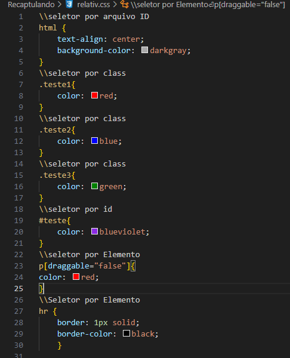

- Aqui
- Abri a
- Ol
- E agora fechei a ol
Gato dançando
Importante sempre que usar o Pr usar o br/ no fim pra quebrar a linha! e para pular linha também!
Dentro do a também pode usar o elemento draggable=true e logo em seguida o href
Vai servir para tornar o link arrastavel ao invés de somente grifalo para copiar por exemplo!
Este da pra arrastarEste não da pra arrastar
Vamos usar agora do elemento img src="url"/
Esse elemtno vai servir como ancora para traser imagens ao site!
Basta usarmos esse elemento assim como o href e definir o link qual vamos trazer a imagem.
Uma boa referencia de site para pegar imagens é o picsum.photos
Fotos aquiDevemos sempre que possivel utilizar o elemento alt="descrição da imagem" para ajudar a criar uma descrição para imagem para aqueles que não enchergam, basta adicionar ele após fechar as aspas do link da imagem!
Vamos usar de preferencia o estilo css externo, ou seja, teremos um arquivos css separado de nosso html
para evitar acumulo de informações em nosso codigo.
Vamos usar logo após o head no Doctype o link
que ira servir para direcionar as informações do css para nosso codigo, ficando assim: < link
rel="stylesheet" href="./arquivo css />"
Para realacionarmos o css diretamente a nosso codigo podemos definir id, categoria, entre outras
informações
para direcionar estilos e alterações visuais diretamente a um elemento, por exemplo:
H1 {
color: blue
}
Isso ira definir todos h1 como azul! Mas posso usar também os id como:
depois do h1 vou colocar assim:
< h1 class="classe"> texto < /h2>
Dessa maneira só irei alterar no css os elementos com essa classe especifica!
Teste 1
Teste 2
Teste 3
Temos também o id que podemos utilizar quase da mesma maneira que o class!
< h2 id="identificador"> teste < /h2>
Teste
A diferença é que id pode ser usado em somente 1 elemento já o class pode ser usado em varios iguais!
Temos também o atributo Draggable que basicamente podemos definir como true ou false e ele ira
alterar apenas os elementos com o atributo draggable identificado!
Exemplo:
< p draggable="true">Teste < /p>
Esse elemento quando selecionado no css ira ser definido pelo posição true or
false!
< p draggable="false">Teste < /p>
Ficando assim:
True
False
False
Temos também o seletor universal definido por * basicamente ele seleciona tudo e executa como mandado no css!
No css ficariam esse seletores dessa maneira:
Uma boa inidicação de site para paletas de cores
Color Hunt - Paleta de coresFontes no CSS
Podemos alterar as fontes, tamanhos e demais opções dentro do css usando os indicadores.
Como a cor da fonte usando -> color:cor
O tamnho usando -> Font-size:tamanho
A fonte utilizada usando -> Font-family:arial
Entre outras opções e variações.